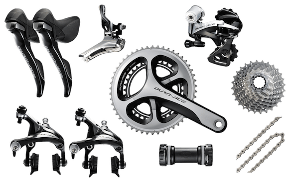
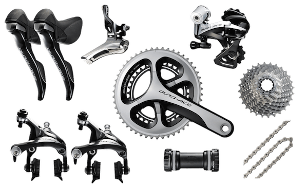

The Shimano Tiagra groupset is the entry level Shimano groupset for road, touring, and triathlon bicycles. It offers the true Shimano shifting experience, eliminating the the thumb upshift that some groupsets such as the Sora groupset offer. With Tiagra components any entry level rider can have the full road bike experience without breaking the bank. While the Tiagra groupset is great for entry level riders and weekend warriors, the shifting range is longer than higher end groupsets, which will result in a more sluggish feel, and weighs significantly more than all of the other high-end Shimano components.
The Shimano 105 groupset bridges the gap between those interested in casual road biking, and those interesting in competing in small, entry level races. The 105 groupset brings much more responsive, race style components to bikes than the Tiagra groupset. Even for more advanced riders, the 105 groupset can be a great option for a cheaper backup or training bike.
Are you competing hard and looking for a groupset to bring your riding to the next level? If so, the Ultegra groupset might be the right choice for you. Ultegra components are snappier and lighter than the 105 components and can offer an edge in a competitive environment, however if you are simply looking for a nice bike at a reasonable price the 105 components offer better value dollar for dollar.
Professional racers choose Dura-Ace. Roughly equivalent to the SRAM Red groupset, the Shimano Dura-Ace components are the best of the best within the Shimano family, offering amazing performace, extremely light components, and unrivaled responsiveness. However all these great features come at a hefty price, and most Dura-Ace riders are professional or semi-professional cyclists.
 
